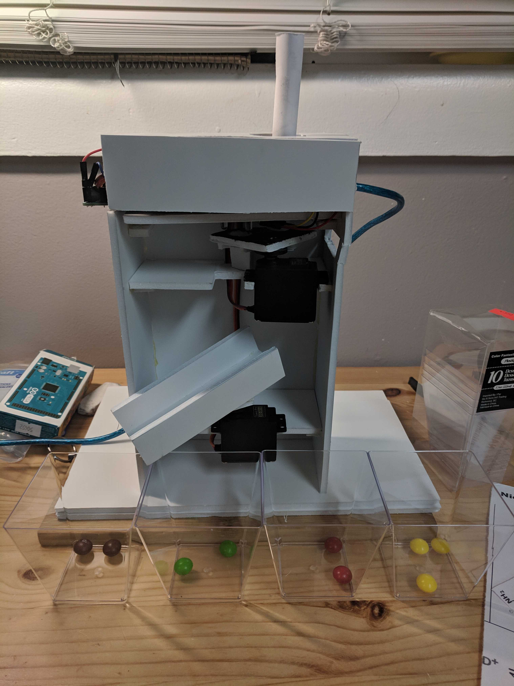

Skittles Sorter
A fun first prototype in the world of Arduino. Using a colour
sensor, two servo motors and gravity, this machine sorts a bag of
original Skittles into its respective flavours. Made for the OCD in us all.